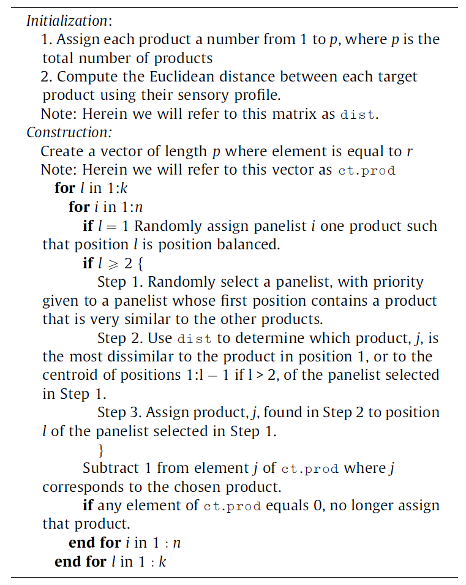

Chapter 8 Data Collection
8.1 Design
8.1.1 Designs of sensory experiments
8.1.1.1 General approach
Sensory and consumer science relies on experiments during which subjects usually evaluate several samples one after the other. This type of procedure is called ‘monadic sequential’ and is common practice for all three main categories of tests (difference testing, descriptive analysis, hedonic testing). The main advantage of proceeding this way is that responses can be analyzed at the individual level so that analysis and interpretation can account for inter-individual differences, which is a constant feature of sensory data.
However, this type of approach also comes with drawbacks28 as it may imply order effects and carry-over effects. Fortunately, most of these effects can be controlled with a proper design of experiment (DoE). A good design ensures that order and carry-over effects are not confounded with what you are actually interested to measure (most frequently, the differences between products) by balancing these effects across the panel. However, it is important to note that the design does not eliminate these effects and that each subject in your panel may still experience an order and a carry-over effect, as well as boredom, sensory fatigue, etc.
8.1.1.2 Crossover designs
For any sensory experiment that implies the evaluation of more than one sample, first-order and/or carry-over effects should be expected. That is to say, the evaluation of a sample may affect the evaluation of the next sample even though sensory scientists try to lower such effects by asking panelists to pause between samples and use of appropriate mouth-cleansing techniques (drinking water, eating unsalted crackers, or a piece of apple, etc.). The use of crossover designs is thus highly recommended (Macfie et al. (1989)).
Williams’s Latin-Square designs offer a perfect solution to balance carry-over effects. They are very simple to create using the williams() function from the {crossdes} package. For instance, if you have five samples to test, williams(5) would create a 10x5 matrix containing the position at which each of three samples should be evaluated by 10 judges (the required number of judges per design block).
Alternately, the WilliamsDesign() function in {SensoMineR} allows you to create a matrix of samples (as numbers) with numbered Judges as row names and numbered Ranks as column names. You only have to specify the number of samples to be evaluated, as in the example below for 5 samples.
library(SensoMineR)
wdes_5P10J <- WilliamsDesign(5)Suppose you want to include 20 judges in the experiment, you would then need to duplicate the initial design.
wdes_5P20J <- do.call(rbind, replicate(2, wdes_5P10J, simplify=FALSE))
rownames(wdes_5P20J) <- paste("judge", 1:20, sep="")The downside of Williams’s Latin square designs is that the number of samples (k) to be evaluated dictates the number of judges. For an even number of samples you must have a multiple of k judges, and a multiple of 2k judges for an odd number of samples.
As the total number of judges in your study may not always be exactly known in advance (e.g. participants not showing up to your test, extra participants recruited at the last minute), it can be useful to add some flexibility to the design. Of course, additional rows would depart from the perfectly balanced design, but it is possible to optimize them using Federov’s algorithm thanks to the optFederov() function of the {AlgDesign} package, by specifying augment = TRUE. For example we can add three more judges to the Williams Latin square design that we just built for nbP=5 products and 10 judges, hence leading to a total number of nbP=13 judges. Note that this experiment is designed so that each judge will evaluate all the products, therefore the number of samples per judge (nbR) equals the number of products (nbP).
library(SensoMineR)
library(AlgDesign)
nbJ=13
nbP=5
nbR=nbP
wdes_5P10J <- WilliamsDesign(nbP)
tab <- cbind(prod=as.vector(t(wdes_5P10J)), judge=rep(1:nbJ,each=nbR), rank=rep(1:nbR,nbJ))
optdes_5P13J <- optFederov(~prod+judge+rank, data=tab, augment=TRUE, nTrials=nbJ*nbP, rows=1:(nbJ*nbP), nRepeats = 100)
xtabs(optdes_5P13J$design)In the code above, xtabs() is used to arrange the design in a table format that is convenient for the experimenter.
Note that it would also be possible to start from an optimal design and expand it to add one judge at a time. The code below first builds a design for 5 products and 13 judges and then adds one judge to make the design optimal for 5 products and 14 judges.
library(AlgDesign)
nbJ=13
nbP=5
nbR=nbP
optdes_5P13J <- optimaldesign(nbP, nbP, nbR)$design
tab <- cbind(prod=as.vector(t(optdes_5P13J)),judge=rep(1:nbJ,each=nbR),rank=rep(1:nbR,nbJ))
add <- cbind(prod=rep(1:nbP,nbR),judge=rep(nbJ+1,nbP*nbR),rank=rep(1:nbR,each=nbP))
optdes_5P14J <- optFederov(~prod+judge+rank,data=rbind(tab,add), augment=TRUE, nTrials=(nbJ+1)*nbP,
rows=1:(nbJ*nbP), nRepeats = 100)8.1.1.3 Balanced incomplete block designs (BIBD)
Sensory and consumer scientists may sometimes consider using incomplete designs, i.e. experiments in which each judge evaluates only a subset of the complete product set (Wakeling and MacFie (1995)). In this case, the number of samples evaluated by each judge remains constant but is lower than the number of products included in the study.
You might want to choose this approach for example if you want to reduce the workload for each panelist and limit sensory fatigue, boredom and inattention. It might also be useful when you cannot “afford” a complete design because of sample-related constraints (limited production capacity, very expensive samples, etc.). The challenge then, is to balance sample evaluation across the panel as well as the context (i.e. other samples) in which each sample is being evaluated. For such a design you thus want each pair of products to be evaluated together the same number of times.
The optimaldesign() function of {SensoMineR} can be used to search for a Balanced Incomplete Block Design (BIBD).
incompDesign1 <- SensoMineR::optimaldesign(nbPanelist = 30, nbProd= 10, nbProdByPanelist = 4)
incompDesign1$designBIBD are only possible for certain combinations of numbers of treatment (products), numbers of blocks (judges), and block size (number of samples per judge). Note that optimaldesign() will yield a design even if it is not balanced but it will also generate contingency tables allowing you to evaluate the design’s orthogonality, and how well balanced are ranks and carry-over effects.
You can also use the {crossdes} package to generate a BIBD with this simple syntax: find.BIB(trt, b, k, iter), with trt the number of products, b the number of judges, k the number of samples per judge, and iter the number of iteration. Furthermore, the isGYD() functions evaluates whether the incomplete design generated is balanced or not. If the design is a BIBD, you may then use williams.BIB() to combine it with a Williams design to balance carry-over effects.
Incomplete balanced designs also have drawbacks. First, from a purely statistical perspective, they are conducive to fewer observations and thus to a lower statistical power. Product and Judge effects are also partially confounded even though the confusion is usually considered as acceptable.
8.1.1.4 Incomplete designs for hedonic tests: Sensory informed designs
One may also be tempted to use incomplete balanced block designs for hedonic tests. However, proceeding this way is likely to induce framing bias. Indeed, each participant will only see part of the product set which would affect their frame of reference if the subset of product they evaluate only covers a limited area of the sensory space.
Suppose you are designing a consumer test of chocolate chip cookies in which a majority of cookies are made with milk chocolate while a few cookies are made with dark chocolate chips. If a participant only evaluates samples that have milk chocolate chips, this participant will not know about the existence of dark chocolate and will potentially give very different scores compared to what they would have if they had a full view of the product category.
To reduce the risks incurred by the use of BIBD, an alternative strategy is to use a sensory informed design. Its principle is to allocate each panelist a subset of products that best cover the sensory diversity of the initial product set. Pragmatically, this amounts to maximizing the sensory distance between drawn products (Franczak et al. (2015)). Of course, this supposes that one has sensory data to rely on in the first place.

8.2 Execute
Sir Ronald Fisher famously said in his presidential address to the first Indian statistical congress (1938): “To consult the statistician after an experiment is finished is often merely to ask him to conduct a post mortem examination. He can perhaps say what the experiment died of.”
Hopefully, the sections above would have helped the sensory and consumer scientist designing their experiment in a way that would warrant them relevant and meaningful data that are obtained with maximum efficiency.
Fisher continues: “To utilise this kind of experience the statistician must be induced to use his imagination, and to foresee in advance the difficulties and uncertainties with which, if they are not foreseen, his investigations will be beset.” Fortunately, we can spare the reader some of these imagination efforts and reiterate the fundamental principles of sensory evaluation that should help avoiding major pitfalls29.
Individual evaluation
Probably the most important requirement for measurement validity is to perform individual evaluation. Sensory responses are very easily biased when judges can communicate. When this happens, observations cannot be considered independent which would rule out most statistical tests. Although this principle is generally accepted and correctly applied, some situations (such as project team meetings, b2b sample demonstration, tasting events, etc.) may be more challenging in this regard. Individual evaluation is usually ensured by the use of partitioned sensory booths, but it can also be achieved by other means (table-top partitions, curtains, separate tables, separate rooms). There are some cases, in consumer research, where interactions between subjects are allowed or even encouraged because they correspond to real-life situations. But these are exceptions to the rule, and in such cases, observations are to be considered at the group level.Balanced order effects and treatments
We already discussed the importance of balancing the evaluation order for first-order and carry-over effects (#LinkAppropriateSection). We cannot overstate how necessary this precaution is to get valid data. On top of having to deal with such effects, sensory scientists sometimes want to test how products are perceived (or liked) under different conditions (e.g. blind vs. branded, with/without nutritional information, in the lab vs. at home, etc.). Choice must then be made between a within-group design (in which participants evaluate the products under the different conditions) and a between-group design (in which participants evaluate the product under one condition only). As often in consumer science, there is no perfect experiment and these two options have pros and cons. For instance, the within-group design would be more powerful and would allow data analysis at the individual level, but it would be more likely to induce response biases. Note that in both cases, participants must be randomly assigned to one group (corresponding either to a given condition, or to the order in which each condition is being experienced, for within-group designs).Separate affective from analytical tasks
In sensory evaluation, a clear distinction is usually made between analytical measurements (whereby emphasis is placed on description of sample characteristics or on differences and similarities between samples) and affective measurements (whereby focus is placed on liking, preferences, and emotions that may derive from the consumption of a product). Because the tasks involved in these two types of measurements are very different, the general recommendation is to conduct them separately (and most often, with different people). Proceeding otherwise would risk inducing cognitive biases and collecting skewed - or even meaningless - data. For example, if the goal of a study it to measure how much consumers like a given set of food products, it wouldn’t make sense to ask trained panelists rate their liking for the products they have been trained to describe. They can certainly do it, but their judgement of the products is likely to be changed by that training and their extensive exposure to the product. Therefore, they can no longer be considered normal consumers. This is relatively commonsense, however the risk of biases can sometimes be more subtle. Indeed, it might be tempting to ask consumers to give their liking for samples and, within the same session, to describe the same samples for a number of attributes. By doing so, you risk changing participants mindset (e.g. by over-focusing on specific attributes) and thus alter liking scores (REF REF) although there is much debate on which type of descriptive tasks would actually lead to biased responses. With this in mind, experimenters might still consider conducting combined measurements for product optimization, especially to get rough estimates of product specifications to target in the first stage of product development. In this objective, Just-about-right (JAR) scales are very popular. They provide a very direct way to optimize products’ sensory characteristics. Alternately, one might expect that ‘untrained’ consumers cannot be used for descriptive analysis. However in the past few decades, the development of descriptive methods that do not require training and that can be achieved in a single session has made consumer-based descriptive analysis possible and reliable.Controlled evaluation conditions an blind evaluation
Final word: quantification, scaling, sensory acquisition softwares
Bmixt_shuffled <- Bmixt[sample(nrow(Bmixt)), ]8.3 Import
It is a truism, but to analyze data we first need data. If this data is already available in R, then the analysis can be performed directly. However, in much cases, the data is stored outside the R environment, and needs to be imported.
In practice, the data might be stored in as many format as one can imagine, whether it ends up being a fairly common solution (.txt file, .csv file, or .xls(x) file), or software specific (e.g. Stata, SPSS, etc.).
Since it is very common to store the data in Excel spreadsheets (.xls(x)) due to its simplicity, the emphasis is on this solution. Fortunately, most generalities presented for Excel files also apply to other formats through base::read.table() for .txt files, base::read.csv() and base::read.csv2() for .csv files, or through the {read} package (which is part of the {tidyverse}).
For other (less common) formats, you may find alternative packages that would allow importing your files in R. Particular interest can be given to the package {rio} (rio stands for R Input and Output) which provides an easy solution that:
- Handles a large variety of files,
- Guess the type of file it is,
- Provides tools to import, export, and convert almost any type of data format, including .csv, .xls(x), or data from other statistical software such as SAS (.sas7bdat and .xpt), SPSS (.sav and .por), or Stata (.dta).
As an alternative, the package {foreign} provides functions that allow importing data stored from other statistical software (incl. Minitab, S, SAS, Stata, SPSS, etc.).
Although Excel is most likely one of the most popular way of storing data, there are no {base} functions that allow importing such files easily. Fortunately, many packages have been developed in that purpose, including {XLConnect}, {xlsx}, {gdata}, and {readxl}. Due to its convenience and speed of execution, we will be using {readxl} here.
8.3.1 Importing Structured Excel File
First, let’s import the Sensory Profile.xlsx workbook using readxl::read_xlsx() by informing as parameter the location of the file and the sheet where it is stored. For convenience, we are using the {here}30 package to retrieve the path of the file (stored in file_path).
This file is called structured as all the relevant information is already stored in the same sheet in a structured way. In other words, no decoding is required here, and there are no ‘unexpected’ rows or columns (e.g. empty lines, or lines with additional information regarding the data that is not data):
- The first row within the Data sheet of Sensory Profile.xlsx contains the headers,
- From the second row onward, only data is being stored.
Since this data will be used for some analyses, it is assigned data to an R object called sensory.
To ensure that the importation went well, we print sensory to see how it looks like. Since {readxl} has been developed by Hadley Wickham and colleagues, its functions follow the {tidyverse} principles and the data thus imported is stored as a tibble. Let’s take advantage of the printing properties of a tibble to evaluate sensory:
sensorysensory is a tibble with 99 rows and 35 columns that includes the Judge information (first column, defined as character), the Product information (second column, defined as character), and the sensory attributes (third column onward, defined as numerical or dbl).
8.3.2 Importing Unstructured Excel File
In some cases, the data are not so well organized/structured, and may need to be decoded. This is the case for the workbook entitled TFEQ.xlsx.
In this file:
- The variables’ name have been coded and their corresponding names (together with some other valuable information we will be using in the next chapter) are stored in a different sheet entitled Variables;
- The different levels of each variable (including their code and corresponding names) are stored in another sheet entitled Levels.
To import and decode this data set, multiple steps are required:
- Import the variables’ name only;
- Import the information regarding the levels;
- Import the data without the first line of header, but by providing the correct names obtained in the first step;
- Decode each question (when needed) by replacing the numerical code by their corresponding labels.
Let’s start with importing the variables’ names from TFEQ.xlsx (sheet Variables)
In a similar way, let’s import the information related to the levels of each variable, stored in the Levels sheet.
A deeper look at the Levels sheet shows that only the coded names of the variables are available. In order to include the final names, var_names is joined (using inner_join).
library(tidyverse)
(var_labels <- read_xlsx(file_path, sheet="Levels") %>%
inner_join(dplyr::select(var_names, Code, Name), by=c(Question="Code")))Ultimately, the data (Data) is imported by substituting the coded names with their corresponding names. This process can be done by skipping reading the first row of the data that contains the coded header (skip=1), and by passing Var_names as header or column names (after ensuring that the names’ sequence perfectly match across the two tables!).
Alternatively, you can import the data by specifying the range in which the data is being stored (here `range=“A2:BJ108”``).
The data has now the proper header, however each variable is still coded numerically. The steps to convert the numerical values with their corresponding labels is shown in Section 9.
Remark: Other unstructured data include the information regarding the levels of a factor as sub-header. In such case, a similar approach is used:
- Start with importing the first rows of the data that contain this information using the parameter
n_maxfrom `readxl::read_xlsx``. - From this subset, extract the column names.
- For each variable (when information is available), store the additional information as a list of tables that contains the code and their corresponding label.
- Re-import the data by skipping these rows, and by applying manually the headers to use.
8.3.3 Importing Data Stored in Multiple Sheets
It can happen that the data that needs to be analyzed is stored in different files, or in different sheets within the same file. Such situation could happen if the same test involving the same samples is repeated over time, or has been run simultaneously in different locations, or simply for convenience, your colleague wanted to simplify your task and already split the data based on a variable of interest.
Since the goal here is to highlight the possibilities in R to handle such situations, we propose to use a small fake example where 12 panelists evaluated 2 samples on 3 attributes in 3 sessions, each session being stored in a different sheet in excel_scrap.xlsx.
A first approach to tackle this problem could be to import each file separately, and to combine them together using the bind_rows() function from the {dplyr} package. However, this solution is not optimal since it is very tedious when a larger number of sheets is involved, and it is not automated since the code will no longer run if the number of session changes.
To counterbalance, we first introduce the function excel_sheets() from {readxl} as it provides all the sheet that are available in the file of interest. This allows us reading all the sheets from that file, regardless of the number of sessions. Second, the function map() from the {purrr} package comes handy as it applies a function (here read_xlsx()) to each element of a list or vector (here, the one obtained from excel_sheets()).
path <- file.path("data", "excel_scrap.xlsx")
files <- path %>%
excel_sheets() %>%
set_names(.) %>%
map(~read_xlsx(path, sheet = .))As can be seen, this procedure creates a list of tables, with as many elements are there are sheets in the excel file. To convert this list of data tables into one unique data frame, we first extend the previous code and enframe() it by informing that the separation was based on Session. Once done, the data (stored in data) is still nested in a list, and should be unfolded. Such operation is done with the unnest() function from {tidyr}:
files %>%
enframe(name = "Session", value = "data") %>%
unnest(cols = c(data))This procedure finally returns a tibble with 72 rows and 6 columns, ready to be analyzed!
To go further:
- Instead of
enframe(), we could have usedreduce()from{purrr}, ormap()combined withbind_rows(), but both these solutions would then lose the information regarding theSessionsince it is not part of the data set itself. - The functions
enframe()andunnest()have their alter-ego indeframe()andnest()which aim in transforming a data frame into a list of tables, and in nesting data by creating a list-column of data frames. - In case the different sets of data are stored in different excel files (rather than different sheets within a file), we could apply a similar procedure by using
list.files()from the{base}package, together withpattern = "xlsx"to limit the search to Excel files present in a pre-defined folder.
Market researchers would argue that evaluating several products in a row doesn’t usually happen in real life and that proceeding this way may induce response biases. They thus advocate the use of pure monadic designs in which participants are only given one sample to evaluate. This corresponds to a between-group design that is also frequently used in fields where only one treatment per subject is possible (drug testing, nutrition studies, etc.).↩︎
For a more detailed description of these principles, we refer the reader to comprehensive sensory evaluation textbooks. See for instance (Lawless and Heymann, 2010), (Civille and Carr, 2016) or (Stone, Bleibaum and Thomas, 2022)↩︎
The package
{here}is very handy as it provides an easy way to retrieve your file’s path (within your working directory) by simply giving the name of the file and folder in which they are stored.↩︎